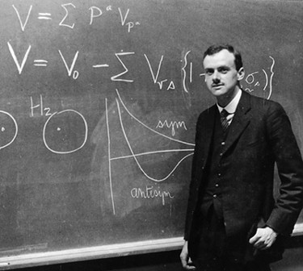
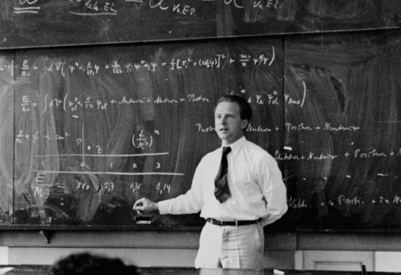

Formules pilonnant la physique quantique :

L'équation de Schrödinger :
Formulée par Erwin Schrödinger en 1925, cette équation est l'équivalent quantique des lois de Newton en mécanique classique. Elle décrit l'évolution dans le temps de l'état quantique d'un système, représenté par une fonction d'onde 𝜓(psi). Mathématiquement, elle s'écrit sous la forme : \[ i \hbar \frac{\partial \psi}{\partial t} = \hat{H} \psi \] où ℏ est la constante de Planck réduite, 𝜓 est la fonction d'onde du système et Ĥ est l'opérateur hamiltonien, qui représente l'énergie totale du système (cinétique + potentielle). Cette équation permet de calculer les probabilités des états possibles d'une particule, comme sa position, sa vitesse, et son énergie.

Le principe d'incertitude de Heisenberg :
Ce principe, énoncé par Werner Heisenberg en 1927, exprime les limites de précision avec lesquelles certaines paires de propriétés physiques (comme la position et la quantité de mouvement d'une particule) peuvent être connues simultanément. Il se formule par l'inégalité : \[ \Delta x \cdot \Delta p \geq \frac{\hbar}{2} \] où Δ𝑥 est l'incertitude sur la position, Δ𝑝 l'incertitude sur la quantité de mouvement (momentum), et ℏ est la constante de Planck réduite. Ce principe montre que plus on mesure précisément une propriété (comme la position), moins on connaît précisément son complémentaire (la quantité de mouvement), et vice versa. Ces deux formules constituent les bases de la physique quantique et introduisent l'idée que la réalité au niveau quantique est fondamentalement probabiliste et non déterministe.